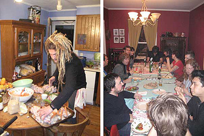

Kitchen
CWRS on Tilzy.tv
Cooking with Rockstars just got a nice write-up on Tilzy.tv! In it, the show is called "refreshingly entertaining", and I am billed as "one of the nicest people on and off the internets" (you'll have to judge that for yourself). You should totally go read it!
Be sure to watch the video interview I did with Tilzy's creator, Jamison Tilsner, at SXSW this spring (click on the Tilzy graphic near the end of the article to access the video).
Tilzy.tv is an online video news and review site that has become my main resource for keeping up with the exploding world of online video. I've been fortunate to become friends with Jamison and his partner, Josh Cohen. Those boys are so cute, I want to use them as keychains! They also provide the Net with a fine service that I'm confident you will enjoy.
Geeking out with YACHT
One of my favorite things about interviewing YACHT was that Jona Bechtolt was the first of my rockstar guests to be impressed by my Geek Cred. When I introduced my camera person (and one of my personal music gurus), Maura Johnston, as my “Web 1.0” friend, Jona responded “What, did you meet on a Web Ring?!”
That gave me an opening to say that I was a designer for the first commercial web site (Global Network Navigator) back in early ’93 and that I had written a number of web design books for O’Reilly. These little tidbits of my personal bio might fly over the head of anyone else, but Jona—a well-known geek himself—was wide-eyed with appreciation… he made ME feel like a rockstar!
After hitting it off right away, we went on to have a lively chat about the usual food stuff. I think you can tell how much fun I was having. But I suspect that Jona and Claire have fun like that wherever they go… being positive is part of the YACHT brand. You definitely get back what you give.
Cooking Up a Storm!
As you may know, I have been working for years to get a band into the kitchen to do some real cooking. The reality has been that I've only had access to touring bands between their sound check and set, which means I've been doing a lot of talking about cooking with rockstars.
I'm very excited to announce that my dry spell has ended, and now it seems that everybody wants to do some cookin'! I've already cooked with Nada Surf and Dresden Dolls and have several more (top secret) cooking episodes in the works.
Nada Surf's Daniel Lorca
When I first invited Nada Surf to be on the show (I'm quite a fan of their new release, Lucky), I was told that Daniel was the guy I wanted to talk to. Then Daniel emailed his response:
I nearly cried!

I had the pleasure of spending a crisp, Spring day in Portsmouth, NH cooking and chatting with Daniel as he prepared a gourmet, sit-down dinner for 28 pals (Matthew and Ira from his band, their manager and road crew, the bands The Jealous Girlfriends and Minus Scale, our lovely host Jo Lenardi from Barsuk Records, a gang of her local friends and coworkers, and last but not least, the Cooking with Rockstars crew).


The menu consisted of an arugula salad with goat cheese, smoked tomatoes, home-made tomato jam, and grilled avocado (!) followed by tarragon cornish hens with a cognac cream sauce loaded with chanterelles and grapes, and wild rice with grilled ramps (wild garlicky leeks). Jo prepared a meringue/whipped cream/berry dessert that was the size of a raft.
We left that night (technically, early the next morning) with full bellies, new cooking tips, and nearly 5 hours of footage. I'm considering renaming the show "Cooking with Nada Surf". Lucky, indeed!
The Dresden Doll's Brian Viglione
The very next day, I headed to Jamaica Plain, MA to spend the afternoon cooking with Brian of The Dresden Dolls. Brian was extremely excited about doing some cooking for the show. It was my first time meeting him, but after a whole day cooking together, we were BFF!
Brian prepared two dishes: The first, the Viglione Family Sauce, is one that he knows like the back of his hand and brings back a rush of childhood memories for him. The other, Kahlua Cupcakes, is one that he was trying out for the first time after tasting one at a recent dinner party (says Brian,"you know when it makes your eyes roll back in your head that it's a good cupcake!"). It was a nice balance of old and new, and everything turned out de-LISH!
I can't wait to show you the results, but first I've got nearly 9 hours of awesome video to log and edit. Be careful what you wish for!
Cookbook for Young Moderns
Cookbook for Young Moderns is the tenth in the series of my end-of-the-year compilations. That’s right, a decade! I figured a cooking theme would be appropriate for this year’s title, because 2007 was the year I finally got my Cooking with Rockstars project back in gear.
2007 was a great year for music, and although I can't claim to be as cutting edge as some of my (younger) peers, I think you'll find that this is a perfectly rockin' mix.
Wherever possible, I provided links to Amazon where you can take a listen to each song and buy it for a buck. I wish I could have included them all. It was kind of surprising finding what was and wasn't available (you can get my brother's self-released Goat Rap but not famed-in-ipod-ads Flathead by The Fratellis).
1. The Fratellis | Flathead
2. White Rabbits | The Plot
3. Radiohead | Bodysnatchers
4. What Made Milwaukee Famous | Selling Yourself Short
5. The New Pornographers | All the Things That Go to Make Heaven and Earth
6. The Blow | Hey Boy
7. Spoon | The Underdog
8. White Rabbits | Kid On My Shoulders
9. St. Vincent | Your Lips Are Red
10. Okkervil River | Plus Ones
11. Robyn Hitchcock | You & Oblivion
12. David Byrne | Social Studies
13. Peter, Bjorn, and John | Young Folks
14. The Beatles | Hey Bulldog
15. Sondre Lerche | The Tape
16. The Fratellis | Henrietta
17. Matt & Kim | Yea Yeah
18. The Blow | Pile of Gold
19. Liam Lynch | Goat Rap
You will have a crush on Annie Clark
I first saw St. Vincent (her "secret" name is Annie Clark) open for John Vanderslice in Cambridge, and like just about everyone in the place, I was captivated. Sure the pretty girl can sing pretty, but what got me was what a racket she could dish out on the guitar, and how easily she swung between the extremes of ethereal and cacophonous. I became an instant fan.
After that show, I invited her to be a guest on Cooking with Rockstars the next time she rolled through town and she most graciously agreed. The result is this darling little interview where Annie reveals herself to be just as sweet as you might think.
If you haven't seen St.Vincent perform live, get out there and go when she comes to your town. I don't care about your gender or orientation, you're sure to leave with a special place in your heart for the pretty girl with the noisy guitar.

Categories
Now Playing
Cool Stuff
Links to stuff that you might like too.
- I Like Food, Food Tastes Good
 It's a real cookbook with real recipes from real indie rockers. No, I didn't write it (Kara Zuaro is the author), but if you like this site, this book is a great read, even if you don't spend much time in the kitchen.
It's a real cookbook with real recipes from real indie rockers. No, I didn't write it (Kara Zuaro is the author), but if you like this site, this book is a great read, even if you don't spend much time in the kitchen.- LiamLynch.net
- Director, producer, and musician, Liam Lynch, is also my brother. Check out his site and definitely don't miss his amazing and hilarious podcast, Lynchland (also available through iTunes).
- Pitchfork
- I'm probably not telling you something you don't already know, but this publication sets the standard for new music reviews.
- KEXP
- I've found out about more new bands by listening to KEXP (based in Seattle) than through any other source. I love you, John in the Morning.
- Chow.com
- I've been a fan of Chow since it first appeared in print. Now an online resource, this my first stop for all things food.
- Serious Eats
- A foodie/blog community that is another place to hang out if you're looking for food ideas and recommendations.
All content copyright © Jennifer Robbins and Jenville Productions